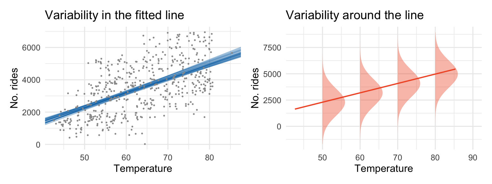

| term | estimate | std.error | statistic | p.value |
|---|---|---|---|---|
| (Intercept) | 11.321 | 6.123 | 1.849 | 0.074 |
| education | 2.651 | 0.370 | 7.173 | <0.001 |
Day 04: Inference for Prediction
In groups: warm-up questions
Is education level associated with income? Researchers collected education level (in years) and income (in thousands of dollars) for a random sample of 32 employees working for the city of Riverview.
The researchers fit a simple linear regression of income on education and obtained the following output:
Q1. Write the fitted regression equation.
Q2. Interpret the slope coefficient in the context of the problem. (Don’t forget to specify units.)
Q3. Interpret the intercept in the context of the problem. (Don’t forget to specify units.)
A new researcher joined the team and decided that education should be standardized (to have mean 0 and SD 1) before fitting the regression model. The output from this regression is shown below:
| term | estimate | std.error | statistic | p.value |
|---|---|---|---|---|
| (Intercept) | 53.742 | 1.587 | 33.861 | <0.001 |
| scale(education) | 11.567 | 1.613 | 7.173 | <0.001 |
Q4. Write the fitted regression equation for this new model.
Q5. Interpret the slope coefficient in the context of the problem. (Don’t forget to specify units.)
Q6. Interpret the intercept in the context of the problem. (Don’t forget to specify units.)
Q7. Compare the two models. What’s the same? What’s different?
ImportantStop here
Let Amanda know when your group finishes!
Two types of predictions
- Predicting the mean response at a specific value of \(x\) (called a _________________________ interval)
- e.g., the average leaf width in 2010
- Predicting the response for a specific future observation (called a _________________________ interval)
- e.g., the leaf width of one specific leaf in 2010
Other Examples:
Inference for prediction
Best point estimate: \(\widehat y_0 = \widehat\beta_0 + \widehat\beta_1 x_0\)
General interval formula: \[\text{estimate} \pm t^* \times SE\]
- \(\widehat y_0\) is our estimate
- use a \(t\)-distribution with \(df = n-2\) to find \(t^*\)
We’ll need a different SE depending on whether we’re building:
- a confidence interval for the mean response \(\widehat\mu(Y \mid X_0)\), or
- a prediction interval for an individual response \(Y \mid X_0\)
Standard errors
\[SE\big(\widehat\mu(Y\mid X)\big) = \widehat\sigma \sqrt{\frac{1}{n} + \frac{(x_0-\overline x)^2}{\sum_{i=1}^n (x_i-\overline x)^2}}\]
\[SE(\widehat y) = \widehat\sigma \sqrt{1 + \frac{1}{n} + \frac{(x_0-\overline x)^2}{\sum_{i=1}^n (x_i-\overline x)^2}}\]
The interval for _________ will be wider
As \(x_0\) gets farther from \(\overline{x}\), both SE’s get _______________
\[SE(\widehat y) = \sqrt{\underbrace{\widehat\sigma^2}_{\text{variability in } \rule{.5cm}{0.3pt}} + \underbrace{\frac{\widehat\sigma^2}{n} + \frac{\widehat\sigma^2(x_0-\overline x)^2}{\sum_{i=1}^n (x_i-\overline x)^2}}_{\text{variability in } \rule{1cm}{0.3pt}}}\]

R commands
predict() quickly calculates \(\widehat y\) for a given \(x\) (or a vector of \(x\)’s):
predict(nhanes_lm, newdata = data.frame(sedentary_hours = 10))
## 1
## 1.218353
predict(nhanes_lm, newdata = data.frame(sedentary_hours = c(8, 10, 12)))
## 1 2 3
## 1.155535 1.218353 1.281171The interval argument specifies which type of interval you want:
predict(nhanes_lm, newdata = data.frame(sedentary_hours = 10),
interval = "confidence")
## fit lwr upr
## 1 1.218353 1.098451 1.338255
predict(nhanes_lm, newdata = data.frame(sedentary_hours = 10),
interval = "prediction")
## fit lwr upr
## 1 1.218353 -0.520678 2.957384The level argument sets the confidence level (default 0.95):
predict(nhanes_lm, newdata = data.frame(sedentary_hours = 10),
interval = "prediction", level = .99)
## fit lwr upr
## 1 1.218353 -1.069557 3.506263Adding se.fit = TRUE returns the standard error needed for “by hand” calculations:
predict(nhanes_lm, newdata = data.frame(sedentary_hours = 10),
se.fit = TRUE)
## $fit
## 1
## 1.218353
##
## $se.fit
## [1] 0.06106312
##
## $df
## [1] 657
##
## $residual.scale
## [1] 0.8835349In groups: prediction and confidence intervals
Tip
The R code for the following questions is found at
https://aluby.github.io/stat230/activities/04R-prediction
The URL is also posted on Moodle.
Now, we’ll explore the city data using R.
Q1. Make a plot of income against education and overlay the linear regression equation. Does it look like what you expected?
Q2. Make a plot of income against scale(education) and overlay the linear regression equation. Does it look like what you expected?
Q3. Find the linear regression equation from Q1. Confirm that it matches the table at the beginning of this worksheet.
Q4. The first person in this dataset has education = 8. Calculate the expected income of this person using the first regression equation.
Q5. If we want to predict the income of this person, should we use a confidence interval or a prediction interval?
Q6. Use R to construct the appropriate 89% interval for this person’s income. Record this interval below.
Q7. Interpret the interval in context.
Q8. Run the code to produce a scatterplot, regression line, and both types of intervals. Which is the prediction interval and which is the confidence interval? How can you tell?